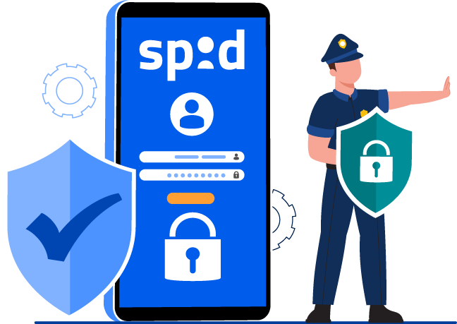
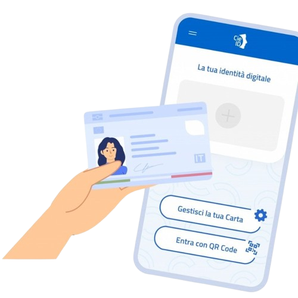

Cos'è lo SPID?
Lo SPID è l'identità digitale unica per accedere ai servizi online della Pubblica Amministrazione e dei privati aderenti tramite un unico account. È semplice, sicuro, veloce e utilizzabile da qualsiasi dispositivo ogni volta che trovi il polnante "Entra con SPID".
Informazioni aggiuntive
Requisiti per fare lo SPID: Avere almeno 18 anni (per SPID standard); Possedere un documento italiano valido; Avere un codice fiscale italiano; Avere un numero di cellulare personale; Avere un indirizzo email personale.
Come ottenere lo SPID: Per ottenere le tue credenziali SPID devi rivolgerti ad un identity provider accreditato dall'Agenzia per l'Italia Digitale (AgID). Al momento i gestori d'identità sono 12, il più conosciuto è Poste Italiane. Ogni gestore offre diverse modalità per richiedere e ottenere SPID: scegli quella più adatta alle tue esigenze. L'attivazione richiede riconoscimento in presenza, da remoto (webcam, bonifico, documenti) o tramite bonifico identificativo.
Cosa è il bonifico identificativo: Consiste nel fare un piccolo bonifico (di solito 1 € circa), il bonifico deve partire da un conto corrente intestato a te e il provider controlla che: Nome e cognome del conto coincidano con quelli del richiedente; IBAN e dati bancari siano validi.
Dati e scadenze: SPID conta circa 40 milioni di identità (2025). Oltre 12.000 pubbliche amministrazioni consentono l'accesso tramite SPID. L'identità si rinnova automaticamente ogni due anni, mentre la password ha una validità di 180 giorni.
Livelli dello SPID:
Livello 1: Autenticazione con utente e password. Gratuito ed usato per servizi a basso rischio.
Livello 2: Autenticazione con utente, password e codice temporaneo OTP generato via app o SMS. Il prezzo varia in base al provider ed è usato per INPS o Fascicolo sanitario (è una forma di 2FA). Alcuni provider lo danno gratuito, altri a canone annuale.
Livello 3: Autenticazione tramite dispositivo fisico (es. smart card, CNS, certificati digitali) per massimo livello di sicurezza. A pagamento ed usato per servizi sensibili (es. alcuni servizi INAIL).

Cos'è la CIE?
La CIE è la versione elettronica del documento di identità fisico emesso dallo Stato. Si presenta come una tessera elettronica munita di microchip che contiene molte più informazioni rispetto allo SPID, come ad esempio le impronte digitali.
Informazioni aggiuntive
Differenze SPID vs CIE: Entrambe possono considerarsi identità digitali e sono oggi molto utili per accedere ai servizi della pubblica amministrazione e non solo. Tuttavia, esistono alcune differenze fondamentali tra SPID e CIE. La differenza sostanziale tra SPID e CIE risiede nella natura dello strumento:
La CIE è la versione elettronica del documento di identità fisico, emesso direttamente dallo Stato.
Requisiti per la CIE: Essere iscritti all'anagrafe di un comune italiano o, per i residenti all'estero, essere cittadini italiani iscritti all'AIRE.
Come ottenere la CIE: Viene rilasciata dal Comune di residenza o di dimora. La richiesta si fa presso gli uffici comunali su appuntamento (prenotabile spesso tramite il portale ministeriale "Agenda CIE"). Non viene consegnata subito: viene spedita dall'Istituto Poligrafico e Zecca dello Stato all'indirizzo indicato entro 6 giorni lavorativi.
Costo della CIE: Ha un costo fisso ministeriale di 16,79 €, a cui si aggiungono i diritti di segreteria del Comune (il costo totale si aggira solitamente intorno ai 22-23 €). In caso di duplicato per smarrimento o furto, il costo può raddoppiare.
Validità della tessera: La durata varia in base all'età del titolare: 3 anni per i minori di 3 anni; 5 anni per i minori tra i 3 e i 18 anni; 10 anni per i maggiorenni.
PIN e PUK: Al momento della richiesta in Comune viene consegnata la prima metà dei codici PIN e PUK; la seconda metà arriva a casa insieme alla tessera. Servono per configurare l'app CieID e sbloccare l'accesso di Livello 3.
Livelli di sicurezza CIE:
Livello 1: Accesso tramite inserimento di username e password (creati sul portale CIE).
Livello 2: Accesso tramite username, password e un codice temporaneo OTP inviato via SMS, oppure scansionando un codice QR dall'app CieID.
Livello 3: Massimo livello di sicurezza. Richiede l'utilizzo fisico della tessera poggiata sul retro di uno smartphone dotato di tecnologia NFC (tramite app CieID) oppure inserita in un lettore di smart card collegato al computer.